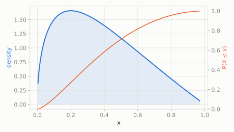

Continuous extended catalog
Gauss Hypergeometric
scipy.stats.gausshyper
Intuition
This is a Beta distribution that's been given an extra 'tilt' knob (z, c) allowing it to skew the usual Beta shape further -- it generalizes Beta the way a weighted coin generalizes a fair one, and shows up in Bayesian queueing-theory priors.
Formula
\[ f(x;a,b,c,z) = C\,x^{a-1}(1-x)^{b-1}(1+zx)^{-c}, \quad 0 \le x \le 1,\ C = \frac{1}{B(a,b)\,{}_2F_1(c,a;a+b;-z)} \]
| parameter | default used here | meaning |
|---|
a | 1.5 | shape parameter, exponent on x |
b | 2.0 | shape parameter, exponent on (1-x) |
c | 1.5 | exponent on the (1+zx) tilt term |
z | 1.0 | tilt strength parameter, z > -1 |
Use cases
- Bayesian prior distributions for queueing system parameters
- Flexible bounded-variable modeling beyond what Beta can capture
A funny example
A spinner is built like the usual Beta-distributed spinner (favoring some directions over others) but then someone glues a weight onto one side, tilting the odds even further using the extra z knob.
What's the probability the tilted spinner lands past the midpoint (X > 0.5)?
Solve it with scipy.stats
import scipy.stats as stats
import numpy as np
dist = stats.gausshyper(a=1.5, b=2.0, c=1.5, z=1.0)
print('P(X > 0.5):', round(dist.sf(0.5), 4))
print('mean:', round(dist.mean(), 4))
P(X > 0.5): 0.2878
mean: 0.3723

Theoretical shape at the default parameters above (blue = density/PMF, orange = CDF).